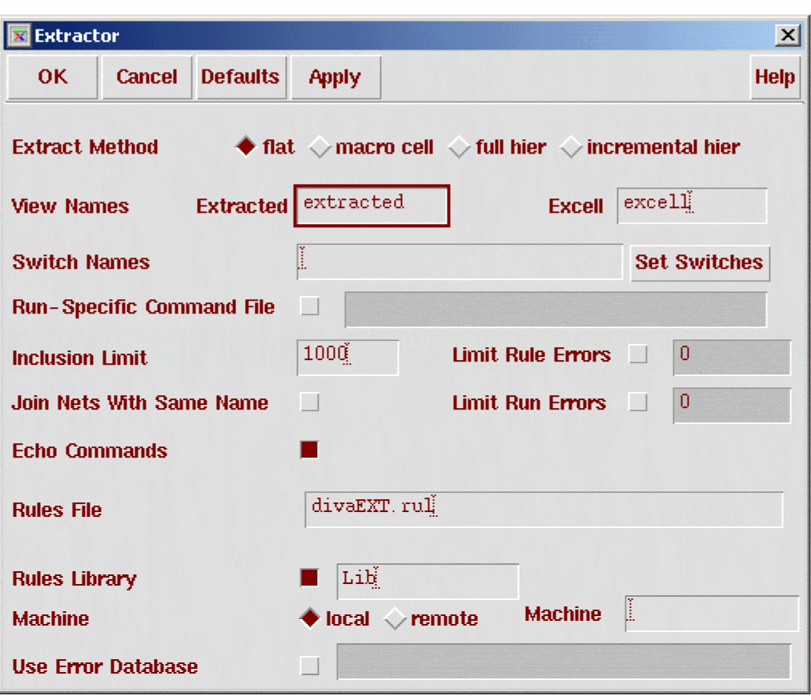
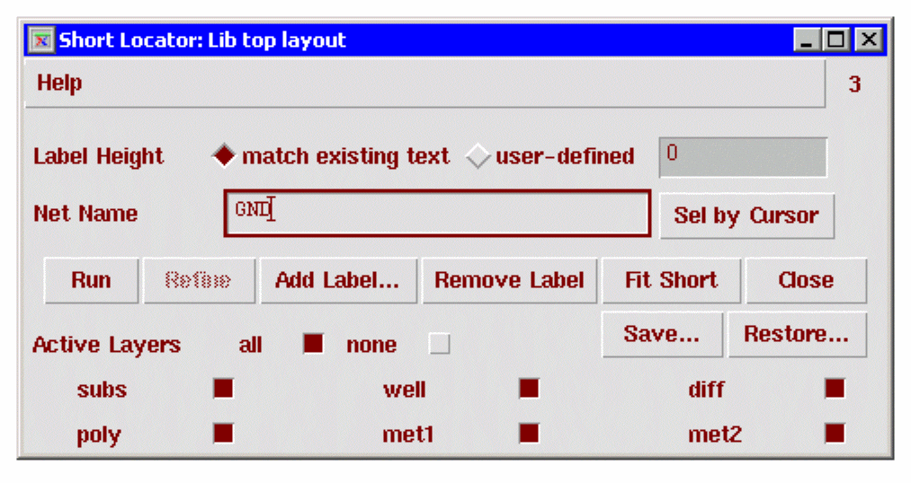

15
Short Locator
Short Locator lets you locate shorts in a layout following an Extract run. It highlights the precise location of a short between two nets. It does not find nets that are shorted, so you must provide the net names. Short Locator runs in both layout and extracted views.
You can save and restore runs part of the way through to spread the work over several sessions. You can also add or remove labels and zoom in to identify the short location.
To start short locator, select Verify – Shorts or type ivHiShorts in the CIW.
Prerequisites
Before you can locate a short, the following must be true:
- You must know the net in which the short exists. The short location program only handles one shorted net at a time, although that actual net may be the result of many intended nets shorted together.
- You must have an extracted view and the layout view it was generated from. The command file used to extract the layout must contain the geomConnect and saveInterconnect commands.
All connect layers must be available, with one exception. If a layer is only attached to a net at one point, as in the case of a tub or well, the absence of the layer does not affect the connectivity of the rest of the net; all shorts can still be isolated.
How Short Location Works
You run the Short Locator with interactive label placement. When you place the labels strategically, the Short Locator can isolate the short. To optimize the Short Locator algorithms, you need to use good technique.
After Short Locator runs, the entire net is highlighted to display two of four different purposes on the hilite layer. Of the four purposes on the hilite layer, two highlight active layers and two highlight inactive layers. After a Short Locator run, the net is highlighted to indicate objects that are resolved (not affiliated with the short) and shorted (involved with the short).
You start by placing labels on two parts of the net you know are distinct and run Short Locator. You iteratively place labels and rerun to narrow down the shorted region.
Short location uses the interconnect polygons and contacts that form the net. Short Locator analyzes the shorted net using all labels associated with the net. It assumes that the section of the shorted net under the label is part of the net defined by that label. Using these labels, the program determines which parts of the shorted net belong to one net, and which belong to another. Any part of the net that could belong to more than one label contains a short.
Short Locator attempts to isolate the short based on the labels available in the graphics data. It knows which labels apply to which layers (from the geomConnect
Connect Errors Property
Diva displays the connect errors dialog box if the extracted cellview of the circuit has an ivConnectErrors property. This property is created if, during layout extraction, some interconnect layers are not saved in the extracted cellview.
Placing Labels
The first consideration in placing a label is knowing which part of the shorted net is really one of the original nets. Pads are obvious places to put labels. Also, if you know the circuit well, you can label the part of a net with long runs.
The second consideration is separation of labels. The farther apart the labels, the more information they supply. This is not a measurement of physical distance across a circuit, but of logical distance along the net. You can place labels physically next to each other provided they are at opposite ends of the shorted net.
You do not have to place labels on the part of the net that has been isolated as containing the short. You can place them anywhere on the net. In most cases, it is better to place the labels on a part of the net already discarded as not part of the short.
Consider the following example.
The labels A and B on the two shorted nets allow the program to isolate the short to the path between A and B as follows.
Further labels on the path only help if they are very close to the short. If, however, you put more labels on the already eliminated part of the net, the isolation becomes precise.
Defining Active Layers
You can define which of the layers forming your interconnections are to be active. The difference between active and inactive layers is as follows:
- An active layer accepts the addition of a text label. If a layer is not active, you cannot add a label to it. By setting global layers such as tub and substrate to inactive status, you can add labels to shapes on layers over them without chance of confusion.
- Active and inactive layers are displayed in different colors and fill patterns. This lets you set the color and fill patterns of layers such as tub and substrate to a lower priority and more muted color than other interconnect layers. If you do not do this, tub and substrate hide all other parts of the net.
Displaying Information
Information about the shorted net is displayed on top of any existing display in all windows containing the layout view of the cell you are processing.
The short location program uses five different display colors and fill patterns. It clones these colors and fill patterns from predefined system layers. You can change the color and fill patterns by changing the system layers using the Layer menu in the CIW. The program clones the new colors and fill patterns after you have changed them.
The five layers and their uses are as follows:
Usually, you should turn off the inactive layers or set them to more muted colors and lighter fill patterns than the active layers. Set the shorted part of the net to a higher intensity color and a more solid fill pattern than the full net. You should also set the text label color to show above everything else.
Saving and Restoring
Since the isolation of a short is an iterative process, you may want to stop the process before you are satisfied with the result, and come back another time to complete it. For this purpose, you can save and restore a run.
When you save the run, you define the file name and its location. When you restore a run, you can define this file name or any other file name you have saved. The contents of the file are in text format that you can edit using a conventional system text editor. However, the integrity of the restored run cannot be guaranteed if you edit the file.
Short Locator Form
Label Height defines the height of the characters for the label text you enter. You can either choose a default height or type in a height in user units.
Net Name specifies the name of the net you want to analyze. You can type in the name or use the mouse to select it.
Sel by Cursor lets you point to the net with the mouse. If more than one net is under the cursor, a list box appears listing all nets under the point clicked. Short Locator enters the name of the net you select in the name field.
Run starts analysis of the net using the current labels.
Refine breaks the shorted part of the net into smaller pieces for a more detailed analysis.
Add Label invokes the Add Label for Short Locator form letting you add a label to the net being analyzed.
Remove Label lets you click on an existing label to remove it from the net being analyzed.
Fit Short zooms in on the shorted part of the net.
Close ends the Short Locator run and removes net or text highlights.
Save invokes the Save Short Locator Status form for you to save the current run information for a later restore.
Restore invokes the Restore Saved Run Status form letting you type a file name of the run previously saved.
Active Layers lists circuit layers that are part of the analysis. You can choose whether layers are active or inactive. Making a layer inactive chnages the highlighting of that layer, which is useful for layers such as a substrate, whose display highlights the complete circuit and interferes with selecting a net with a mouse. You cannot add text to an inactive layer even though it may be visible. However, inactive layers are included in the short analysis.
Running Extraction
Given below are the general steps for running your extraction.
The example below uses one specific cell design, Lib top layout in flat mode in order to demonstrate how to run the extraction. But, what’s given below is just an example whereas your cell design and your shorted bonding pads will be different. So you have to use these general steps in your own design.
If the extracted design is not open, the results are written to disk. The resultant extracted view is not displayed. If an extracted view is currently open, it will be updated when extraction finishes.
- Open your cell design for editing.
- Select Verify -- Extract from your layout window when your cell design gets opened.
-
The Extractor form appears as shown below.
- Set the Extract Method in the Extractor form to flat.
- Click OK on the Extractor form. Extraction begins. When extraction is done, the shorted bonding pad (in this example, PWR ) flashes. This indicates an error in the design.
Using Shorts
Select Verify -- Shorts from the layout or extracted window, or type ivHiShorts in the CIW. If the extracted cellview of the circuit to be processed contains an ivConnectErrors property, a dialog box similar to the following appears:
- Missing interconnect layers can cause incorrect short location results.
- If layers used in the geomConnect command do not appear in the saveInterconnect command, a dialog box warns you and if you run Short Locator on a net using the layers listed in the dialog box, you get incorrect results.
-
The Short Locator form appears as shown here.
To select the label height, click on user-defined and type in the height you want.
To make layers active or inactive, click on the layers to turn them on or off. You can set all layers on or off by selecting all or none.
Specify the net name in one of the following ways:
If you select a net with the mouse, you might pick up the substrate, the well, or some other global layer if those layers are left active. If more than one net appears under the cursor, a list box appears as shown below listing all the nets. Click on a net and select OK.
The name of the net you selected (for example, input) gets entered into the Net Name field of the Short Locator form.
Click on Run. The net will be highlighted. If enough labels exist from the extracted view, a portion of the net may be highlighted as shorted.
To zoom into the short area, click on Fit Short.
Adding Short Locator Labels
If there are not enough labels, or the shorted area involves excessive numbers of shapes, additional labels are needed. This gives the Short Locator more information to work with.
Click on Add Label ... to bring up the Add Label for Short Locator form. By default, the name of the net being analyzed will be in the Label Name field. If another label name is desired, type it into the field. Click OK. The CIW will prompt you to enter a point. Click on a shape in the net which you know to be in the net with the same name as the label.
It is recommended that new labels be placed so there is a path from an existing label of the same name, through the shorted area, to the new label. This generally reduces the shorted area more quickly than placing labels on shapes in the shorted area. In some cases, such as power distribution rings, it is best to start with a label on opposing corners of the ring.
The Add Label for Short Locator form is not modal. If you desire to add multiple labels, click Apply instead of OK for each label. The label name can be changed by typing or clicking the drop down arrow before each click of the Apply button.
Deleting Short Locator Labels
If you have added a label in an incorrect location, press the Remove Label button. The prompt will change to Enter the point for the label. Click on the label you want to remove.
Dealing with complex shapes
Some shorted areas involve complex shapes which prevent a clear isolation of the short. In general, there will only be a few shapes involved in the short at this point. Click the Refine button to invoke a fracturing routine that breaks the shorted area shapes into less complex shapes. After fracturing is complete there is no need to click the Run button since Short Locator will automatically run again.
Saving the run
While even large designs with power/ground shorts can be analyzed very quickly, some designs will require more time. To prevent having to complete an analysis in a single session, you can click the Save ... button to bring up the Save Short Locator Status form.
Enter a file name and click OK.
Restoring a previous run
To restore a saved session, click the Restore ... button to bring up the Restore Saved Run Status form.
Enter the name of a file saved using the Save Short Locator Status form and click OK. The form settings and label locations will be restored. At this point you can add more labels or click the Run button.
Ending Short Locator
When you are done with Short Locator, click the Close button. This will close all Short Locator forms, clean up the analysis engine data structures and remove all Short Locator highlights from the windows.
Return to top